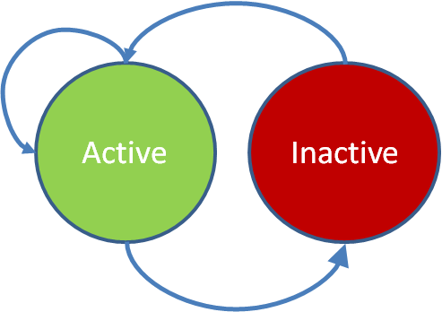

Current Projects
In this study, we design a scalable framework for crowdsourcing weather information,
in which workers need not travel to perform sensing tasks, instead the qualified workers
are within a certain distance from the task. For example, workers within a distance of 5 km
are eligible to report weather). We argue that existing solutions for crowdsourcing spatial
tasks is not applicable. We investigate strategies for task assignment that balance two certain aspects of the framework,
including communication cost (i.e., sending push notification to assigned workers) and time
to complete (delay of the tasks). Extensive experimental results on real-world datasets show
that the proposed algorithms are efficient.
In collaboration with scientists at the Center for Hydrometeorology & Remote Sensing
(CHRS) at the University of California, Irvine,
we developed a mobile App, named iRain (Android)
(iOS), for crowdsourcing rainfall information.
With the ubiquity of mobile devices, spatial crowdsourcing is
emerging as a new platform, that enables spatial tasks
(i.e., tasks related to a location) assigned to and performed
by human workers. However, location privacy is one of the
major impediments that may hinder workers from participation
in spatial crowdsourcing systems. In this work, we
focus on protecting the location privacy of the workers, our
goal is to develop an efficient framework for worker-selected
spatial crowdsourcing which enable the participation of the
crowdsourcing users (i.e., requesters and workers) without
compromising their privacy.
Check out our demonstration
MediaQ is a novel online media management framework to collect,
organize, share, search, and trade user-generated mobile
images and videos by the public. It provides a synergistic hybrid of
storage (e.g., YouTube), trading (e.g., Ebay), social sharing (e.g.,
Facebook) for videos and pictures. MediaQ consists of MediaQ server
and mobile app for smartphone using
iPhone or Android OS. It allows video uploads from user’s smartphone
to be automatically geo-tagged on a map, while also adding metadata
such as its recorded real time and indicating the specific direction
a camera was pointed, per frame. Media content can be exactly pinned
on the map with directional accuracy. Signed participants can post spatial task
requests (i.e., tasks related to a location)
that will automatically be assigned to other participants in the vicinity of the task.
More information at mediaq.usc.edu
Past Projects
Genetic Algorithm for Large Join Query Optimization
Join query optimization (JQO) is a problem of finding the best join order of a join
query based on cost. JQO is one of the most difficult problems in query optimization
as the number of alternative plans to answer a query grows exponentially with the number
of JOINs included in it. Another challenge is caused by the support of a variety of
JOIN methods (e.g., merge, hash) to process individual JOINs, a diversity
of access paths for relations (e.g., b-tree, hash) and cost model for binary join in for a shared-nothing architecture.
In this work, we propose the implementation of genetic algorithm. Experimental results
on TPC-DS benchmark show that GA is a feasible technique.
Spatial crowdsourcing has gained emerging
interest from both research community and industries.
Most of current spatial crowdsourcing frameworks
assume independent and atomic tasks. However,
there could be some cases that one needs to
crowdsource a spatial complex task consisting of some
spatial sub-tasks (i.e., tasks related to a specific location).
The spatial complex task's assignment requires assignments of all of its sub-tasks. Currently
available frameworks are inapplicable to such kind
of tasks. Thus, we formally define the Maximum Complex Task Assignment (MCTA) problem,
an optimization problem that schedules a maximum
number of complex tasks to a given set of workers
subject to constraints of workers and tasks, and propose a solution for it.

Recently we create so much data (2.5 quintillion bytes every day) that
90% of the data in the world today has been created in the last two years alone.
This big data comes from various sources such as sensors used to gather traffic or
climate information, posts to social media sites, photos, videos, emails,
purchase transaction records, call logs of cellular networks, etc. In this report,
we first briefly discuss what programming models/frameworks are used for big data processing,
particularly big graph processing. First, we present general programming models
(i.e., not specifically to graph data) but we include them in this survey because
they are important frameworks and there have been studies to customize these frameworks
for more efficient graph processing. Second, we discuss some techniques that yield up to 1340 times speedup for
some certain graph problems when applied to Hadoop. Next, we discuss vertex-based
programming model and its frameworks for large graph processing.
 Histograms have been extensively used for selectivity estimation
by academics and have successfully been adopted by
database industry. However, the estimation error is usually
large for skewed distributions and biased attributes, which
are typical in real-world data. Therefore, we propose effective
models to quantitatively measure bias and selectivity
based on information entropy. These models together with
the principles of maximum entropy are then used to develop
a class of entropy-based histograms. Moreover, since entropy
can be computed incrementally, we present the incremental
variations of our algorithms that reduce the complexities
of the histogram construction from quadratic to
linear.
Histograms have been extensively used for selectivity estimation
by academics and have successfully been adopted by
database industry. However, the estimation error is usually
large for skewed distributions and biased attributes, which
are typical in real-world data. Therefore, we propose effective
models to quantitatively measure bias and selectivity
based on information entropy. These models together with
the principles of maximum entropy are then used to develop
a class of entropy-based histograms. Moreover, since entropy
can be computed incrementally, we present the incremental
variations of our algorithms that reduce the complexities
of the histogram construction from quadratic to
linear.
As the popularity of Smartphones and tablets, there is a growing interest in
investigating the coexistence of spatial, temporal, security, and social issues
involving these mobile devices. Preliminary research challenges revolve around
bringing these notions closer by collecting various mobile data from users.
iCampus focuses on geospatial social networking for the USC community through crowd-sourcing.
Available participatory data from users including photographs, videos, and
location-based data serves as the main motivation for developing a strong mobile platform.
Collecting such data makes it possible to develop exciting, relevant, and personalized applications
for users in the USC community.
ZingMe is the largest Vietnamese social network, which currently
serves 8 million active users. At this scale, there are many challenges
for VNG’s backend system such as high scalability and reliability,
the most challenging issues at large scale distributed systems.
Motivated by how Dynamo, a distributed key-value storage system from Amazon,
solved trade-off problems in a way that assured great availability;
we started designing a distributed key-value storage system, namely
ZStore with the following features: persistent storage, memory caching,
high scalability and fault-tolerance. We make extensive use of consistent
hashing and replication scheme to achieve our design goal.
The social search project aims to build an instant search engine
that help user to search for their "friends" in our social network named ZingMe.
A User can find a target using either full name, nick name, username or email.
In the project we deal with four main challenges, quality of search results,
latency and scalability. We use Solr search technology to index social graph.
Solr's multi-shards is used for scalability.
We also customize Solr's caching policy to reduce query latency.
We evaluate our system with real log queries. The system indices 30M users
(i.e., 6M active unique users) with SLA of 95% queries with less than 200ms.
Feed Ranking systems provide users with personalized ordered feeds for their pages
in the social network. Facebook has introduced Edge Rank algorithm
for Feed Ranking. Edge Rank considers the importance of each feed creator as well
as the interactions of other users toward the feed. We investigate the improved model
of Edge Rank for ZingMe - the most popular social network in Vietnam. In this project,
we dig more deeply into feed information including the relationship between users and
the interaction toward the feeds as well as using Learning to Rank methods to learn
parameters of the model.